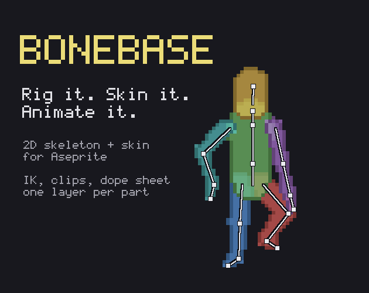
Bonebase is an extension for Aseprite. I can draw a character once, but every time I tried to animate one, its arms changed length every frame and by frame 8 it was a different person. So I built the tool that does the part I'm bad at. You build a 2D skeleton, give it a rough body, animate it with live IK, and export it to your sprite as one layer per group. Then you draw your character on top, frame by frame, over a body that already moves right.
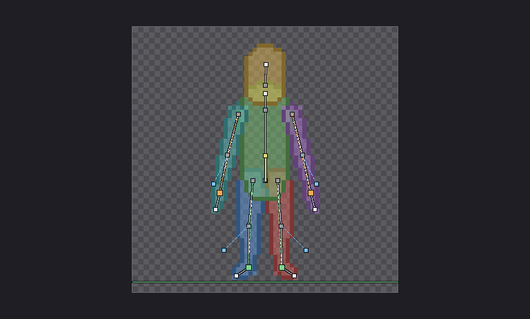
Templates
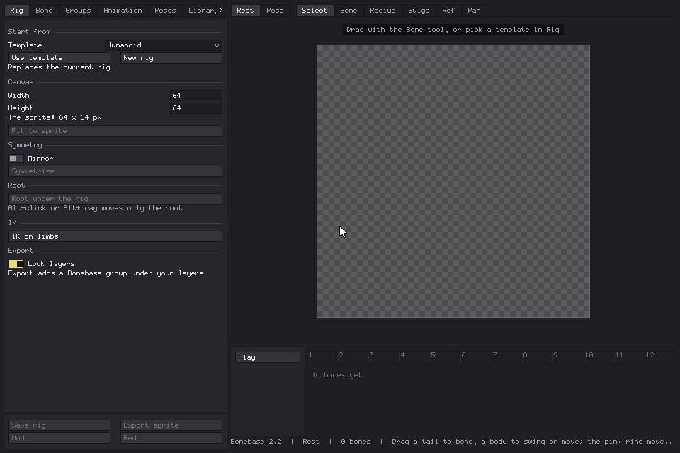
Twenty starting points, so nobody has to place a hip bone from zero. Humanoids from the front (stocky, tall and slim, narrow waist, brute, child), side views (including a hunched one), chibis from two heads tall to round, a quadruped, a winged one and a serpent. The humanoids share bone names, so IK, mirror and Import 3D behave the same on all of them.
- Or draw bones from scratch. Mirror mode builds the other side while you work on one; Symmetrize pairs a rig you made by hand.
- Bones can hang connected or loose: a tail, a cape, a floating head.
- A working canvas bigger than your sprite, with a checker, a color, your sprite or one of its layers behind the rig.
Skin
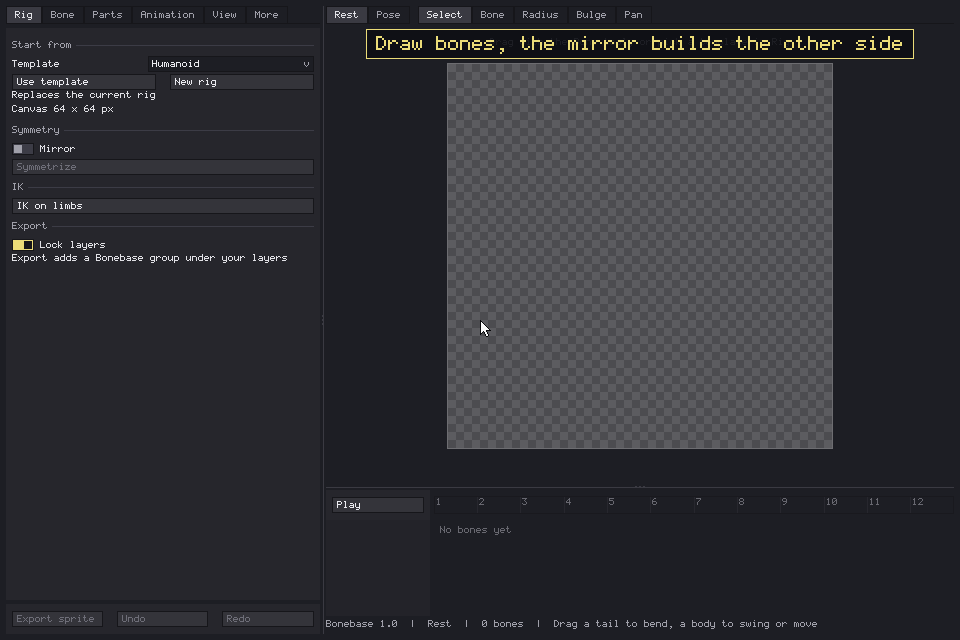
- The skin wraps the bones like a modelling envelope. Set the radius at each joint and push bulges out on either side of a bone: a belly, a calf, a muscle.
- Groups decide which bones go on which layer (arm, leg, torso...), each with its own color and a smooth blend where its bones meet. A bone can be in no group at all, for helpers that shouldn't draw.
- Pixel perfect outline, thick outline, or none.
Reference images
Load a drawing, a photo or another sprite under the rig (from a file, the clipboard or any open sprite) and build or pose the skeleton on top of it. Basically tracing, but the skeleton does the homework. Position, scale, rotation and opacity can be keyed, or you can put a different picture on single frames to match your key poses. It's saved in the sprite and never exported, so your messy sketches stay between us.
Animation and IK
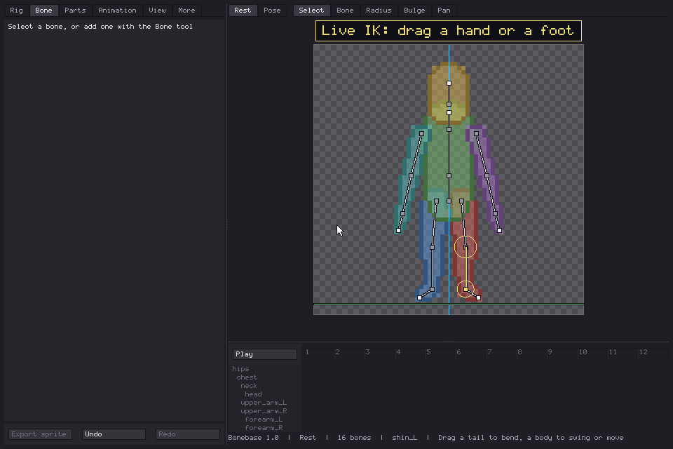
- Pose mode with auto key: drag a bone and the key goes on the current frame.
- Live two bone IK on arms and legs. Drag the hand or foot, pick the elbow or knee side with its pole. Feet stay planted when the hips move, between keys too.
- A root ring carries the whole rig. Alt+click moves only the ring, for when it ended up somewhere silly.
- A ground line that feet stop at.
- Channels for rotation, offset and length (squash and stretch), plus draw order and visibility per group, keyed per frame.
- Eases: Linear, Ease, Ease in, Ease out, Back, Bounce, Step.
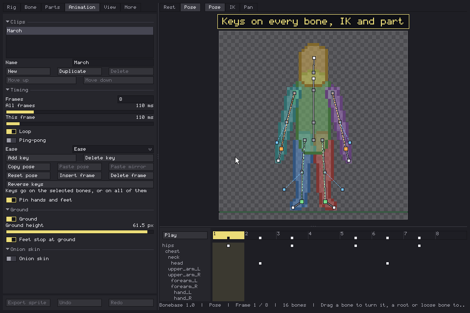
- A dope sheet with a row per bone, IK controller and group. Pick keys, drag them, scale their timing, copy and paste them.
- Copy a pose and paste it mirrored: a left step becomes a right step, front or side view.
- Several clips per rig (idle, walk, attack...), each with its own frames and timing. Holds, ping-pong, reverse keys.
Onion skin
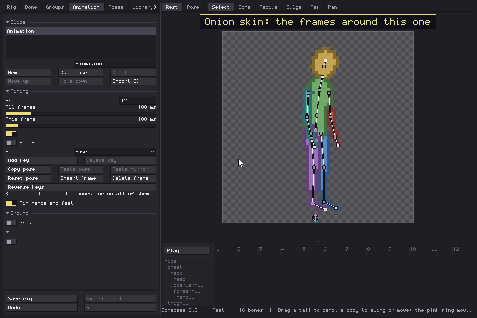
How many frames back and forward, keyframes only or every N frames, a color for each side, opacity and fade, and the style: tint, outline, skin or just the bones. It wraps around the loop too, so frame 1 can see frame 8 coming.
Import 3D and retargeting
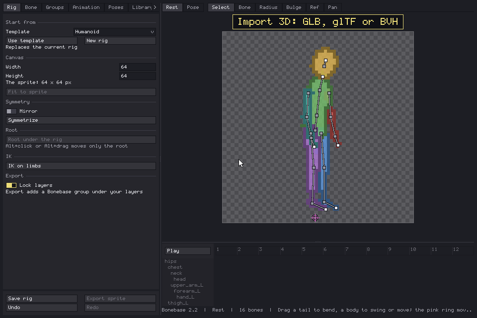
Open a GLB, glTF or BVH file, turn the camera to the side you want, and your 2D rig copies the 3D motion, bone by bone. Or let Bonebase build a new rig from the file's skeleton, groups included.
Yes, Mixamo works. Its skeleton is recognised on its own, so a Mixamo walk, run or punch lands on any humanoid template (front, side or chibi) or on your own rig with the same bone names, no mapping by hand. One step first: Mixamo hands you an FBX, so open it in Blender and export it as .glb. If your bones are named differently, you pick which joint drives each bone once and that's it.
- In place keeps the character on the spot, so a walk that wanders off doesn't take your rig with it.
- Depth order swaps which arm or leg goes in front when the body turns.
- Marked frames: Shift+click the frames you actually like, pick how long the clip should be, and you get a clip with keys only on those frames. A long mocap walk becomes a short pixel art walk, which is what we wanted all along.
Pose library and rig library
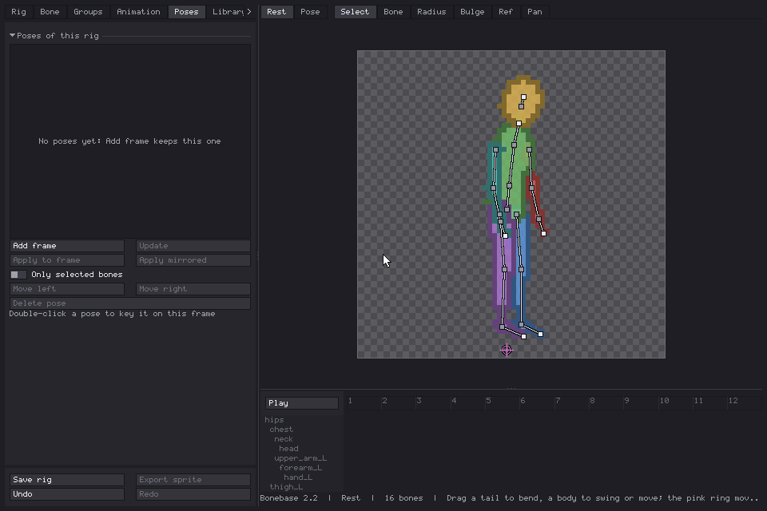
- Poses: keep poses of a rig with thumbnails and drop one on any frame, mirrored if you want the other leg, or only on the bones you selected.
- Library: keep whole rigs, with all their clips and poses, and open them in any sprite. Save rig keeps the library copy up to date with one click, instead of saving over the same name every time like I used to.
Export
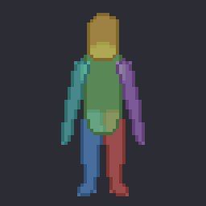
- Export sprite adds a
Bonebasegroup at the bottom of your layers: one locked layer per group, one frame per animation frame, a tag per clip. - Re-export any time. Only Bonebase's own layers are rebuilt; your drawing is never touched.
- The rig is saved inside the sprite. Open Bonebase on it again and everything comes back.
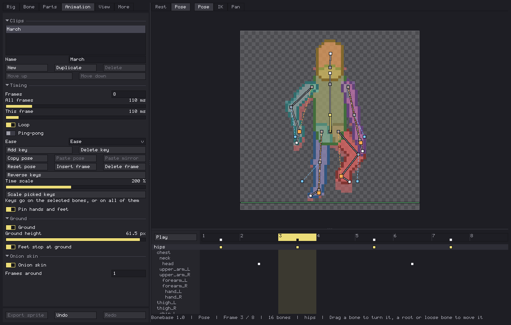
Details
- One window inside Aseprite, with undo for every change and a shortcut list (press
?). - Aseprite 1.3 or newer, RGB sprites. Windows, macOS and Linux.
- Per frame draw order uses Aseprite's cel z-index (1.3 and newer).
Install
- Download the
.aseprite-extensionfile. - Double-click it, or in Aseprite: Edit > Preferences > Extensions > Add Extension.
- Open it from File > Scripts > Bonebase.
License
One purchase is for one person, on every computer they use.
- Use it in any project: personal, commercial, client work, games and assets you sell.
- What you draw and export with it is yours. No attribution required.
- Every update is included.
- Do not share, resell or redistribute the extension. A studio buys one per artist.
Something missing, or something that should work differently? Tell me in the comments. Your ideas are probably better than my knees.
More Aseprite extensions
- FastFX Full: multi-emitter particle FX, live preview and bake.
- VeSprite: vector drawing for pixel art inside Aseprite.
- Spaghetti: node-based textures for Aseprite.
- GhostFrames: RIFE frame interpolation for inbetweens.